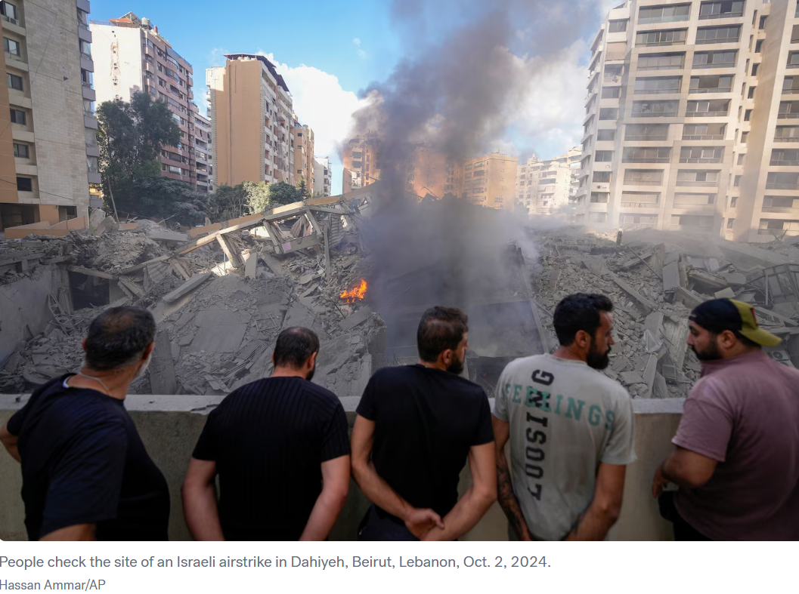

Total Arms Embargo on Israel Would Make Israelis Safer
Commentary - Aubrey Waddle - 4/17/2026

Total Arms Embargo on Israel Would Make Israelis Safer
Fundamentally, the reason I believe the U.S. should stop providing both offensive and defensive weapons to Israel, especially at this point, is rooted in a position I’ve held for about two and a half years, essentially since I became aware of the Israel–Palestine issue and its history.
My position is this, allowing and funding Israel’s Iron Dome, and providing defensive support more broadly, enables Israel to act as aggressively as it does in the region. The aggression we see from groups like Hamas, Hezbollah, the Houthis, and even Iran is not random or happening in a vacuum. There is a long history behind it, and these attacks, rockets toward Tel Aviv for example, are responses, in one form or another, to Israeli actions.
Whether we’re talking about violations of international law in the West Bank, settler violence being tolerated, the broader structural inequalities within Israel, or direct military actions against neighboring regions, the pattern is one of sustained aggression. This is also tied to the ideology of key leaders, figures like Bezalel Smotrich, Itamar Ben-Gvir, and Benjamin Netanyahu, along with the Likud party, who have openly supported expansionist ideas associated with “Greater Israel.”
My argument is that this level of aggression is only sustainable because the consequences are limited. Defensive systems like the Iron Dome reduce the cost of escalation. If those protections weren’t in place, if the U.S. weren’t funding them, Israel would have to factor in much greater risk when acting aggressively.
To make this clearer, consider a hypothetical. If, prior to September 1st, 1939, the United States had funded and built up the defensive capabilities of Nazi Germany, essentially giving it something like an “Iron Dome,” that would have lowered the perceived consequences of its expansionist ambitions. Nazi Germany already had an expansionist ideology, what matters is the calculation. They knew aggression would bring retaliation, but they believed they could withstand it.
That’s the key point, aggressive states act when they believe they can absorb the consequences.
In fact, the most dangerous force for German civilians ended up being the Nazi Party itself. If Germany had never been effectively rearmed, something the Treaty of Versailles attempted, though unsuccessfully enforced, it’s far less likely they would have attempted something like the invasion of Poland. Without the capability, the ideology alone wouldn’t have translated into action.
That’s the parallel I’m drawing. Modern Zionist policy, particularly as shaped by the current leadership, reflects an expansionist and highly aggressive posture. Israel, despite being geographically small, would not be able to sustain that level of aggression without near-total protection from retaliation.
It is also important to understand that the forces often cited as proof that Israel needs endless military backing did not arise in a vacuum. Hezbollah did not always exist. It emerged after Israel’s 1982 invasion of Lebanon. The Houthis did not simply appear out of nowhere; they emerged through the conditions created by war, intervention, and regional destabilization perpetrated by the west. Hamas did not arise in a vacuum either, it arose from the conditions of occupation, blockade, dispossession, and failed political settlement.
The idea that these actors would simply seek to destroy Israel no matter what, and that their behavior has nothing to do with Israeli or Western aggression, is historically shallow. It treats violence as something innate to Arabs or Muslims rather than as something produced by material conditions, repression, war, and retaliation. This assumption is racism as a reflex in the same way looking at the Nat Turner Rebellion and saying that it proved enslaved Black people were simply violent is; that if they were not enslaved they would have risen up and killed everyone anyway. That is fundamentally false. Whatever violence occurred in that rebellion, and however difficult it is to stomach, what should be far harder to stomach are the realities of chattel slavery itself. The more one understands slavery, the more obvious it becomes why slave rebellions were so fierce and so brutal. Cause and effect matters.
That is the same point being made here. Of course October 7th was violent. Look at the conditions Palestinians in Gaza were forced to live under for years, blockade, bombardment, confinement, deprivation, and recurring war. Of course anti-Israel rhetoric in groups like Hezbollah can become extreme after decades of invasion, bombardment, occupation, and regional conflict. Of course hostile reactions emerge when a state repeatedly projects force while presenting itself as untouchable.
None of that is to morally justify every retaliatory act. It is to explain that violent reactions usually follow violent conditions. If one wants fewer violent actors, one must reduce the conditions that create them.
History repeatedly shows this pattern. The Mujahideen in Afghanistan did not arise in a vacuum. Saddam Hussein and the path to the Gulf War did not arise in a vacuum. These situations were shaped by Western backing, regional manipulation, militarization, and great-power meddling. The same principle applies here.
Moreover, if the goal is to reduce civilian deaths, which is ultimately what this comes down to, it’s important to recognize that the current system is already producing massive civilian harm. The expansionist ideology and the aggression of the Israeli state result in countless civilian deaths, whether in Gaza, through settler violence in the West Bank, through actions against Iran, or through attacks on Lebanon. There are civilians in Lebanon not just in danger but actively being killed, civilians in Iran being killed, etc.
So the idea that removing funding for the Iron Dome would uniquely endanger Israeli civilians ignores the reality that civilians across the region are already in constant danger and are actively dying under the current arrangement. If the concern is civilian protection, the current system (unconditional funding of Israel's offensive and defensive capabilities) is already failing on that front in a massive way.
I’m as concerned about those civilians as I am about Israeli civilians, which is exactly why removing, or even just threatening to remove, U.S. funding for both offensive and defensive systems changes the incentive structure. It forces Israeli leadership to stop acting as aggressors and agitators in the region. That reduces civilian deaths on both ends. First and foremost, it reduces the civilian casualties resulting from Israeli military actions in Gaza, the West Bank, Lebanon, Yemen, Iran, Syria, Iraq, and elsewhere. But it also makes Israeli civilians safer, because the incentive and justification for retaliatory attacks against Israel are reduced. If Israel is no longer acting as an aggressive or destabilizing force in the region, the cycle of retaliation begins to diminish.
Additionally, it’s important to understand that the Iron Dome would not simply disappear overnight. While it is heavily funded by the U.S., Israel also funds it domestically and has the capacity to continue doing so, at least for some period of time. So this is not a situation where U.S. funding is cut and the system immediately shuts off.
Instead, it creates a new calculation for Israeli leadership. They would recognize that U.S. support is no longer guaranteed, that their defensive capabilities have a limited runway if they continue at current levels of escalation. These are not irrational actors, they are highly calculated, even if aggressive psychopaths. Leaders within Likud, including Benjamin Netanyahu, would be forced to evaluate how long they can sustain their current posture without external backing.
That means they would have to consider de-escalation, reducing regional conflict, and stepping back from continuous military engagement, because the ability to absorb retaliation would no longer be guaranteed. In other words, removing or threatening to remove that defensive backstop doesn’t create chaos, it forces restraint, because the consequences of aggression become real again.
Conclusion
In conclusion, the central argument is not that Israeli civilians are undeserving of protection, but that true protection cannot be built on permanent aggression, occupation, and external military guarantees. Unconditional U.S. support, whether offensive or defensive, has helped create a system in which Israeli leadership can pursue violent and expansionist policies while avoiding the full consequences of those choices. That arrangement has produced devastation across the region and has not delivered lasting safety to Israelis themselves.
If the genuine objective is to reduce civilian deaths and move toward stability, then the incentive structure must change. Conditioning, reducing, or ending military support would force restraint, encourage de-escalation, and make diplomacy more necessary than domination. Real security for Israelis, Palestinians, and neighboring populations alike will come not through endless weapons flows, but through accountability, political settlement, and an end to the cycle of provocation and retaliation.